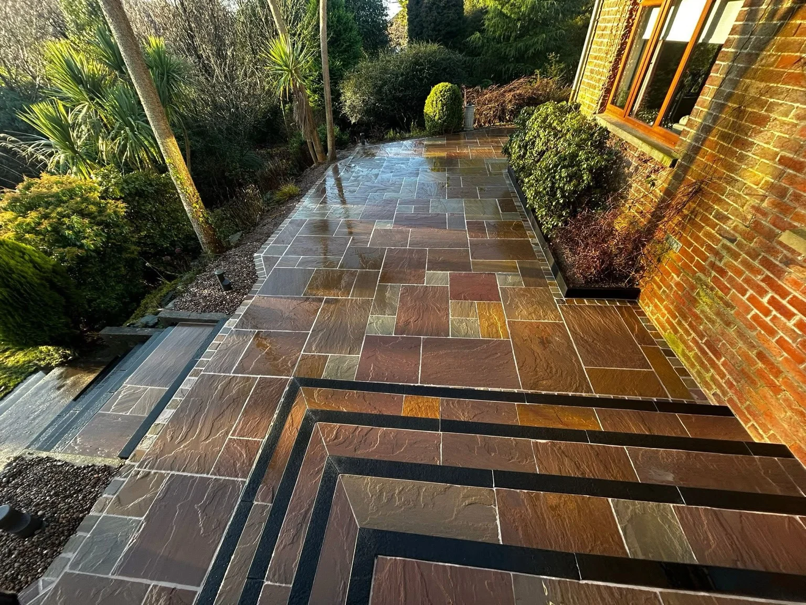

J.McK · DUNDONALD
Start with your space.
Our project photographs show pale paving, mixed tone stone and carefully defined borders. We can discuss the layout, access and finish for your outdoor space.
Share photographs, an approximate size and your location so we can discuss the scope of the work.
Discuss your project →OUR PROJECTS
A closer look.
Select a photo to enlarge.
FREE, NO-OBLIGATION QUOTE
Let’s talk about your outdoor space.
Tell us what you have in mind. Share a little about the space, the work you have in mind and your location.